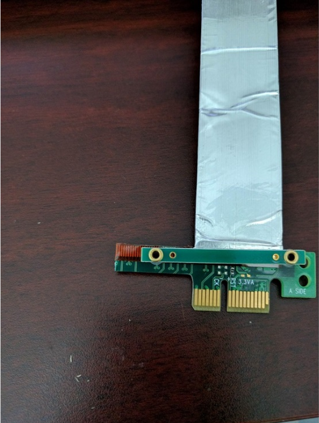
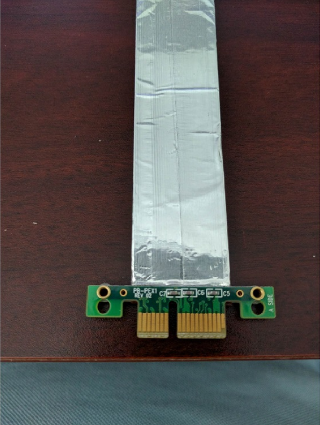
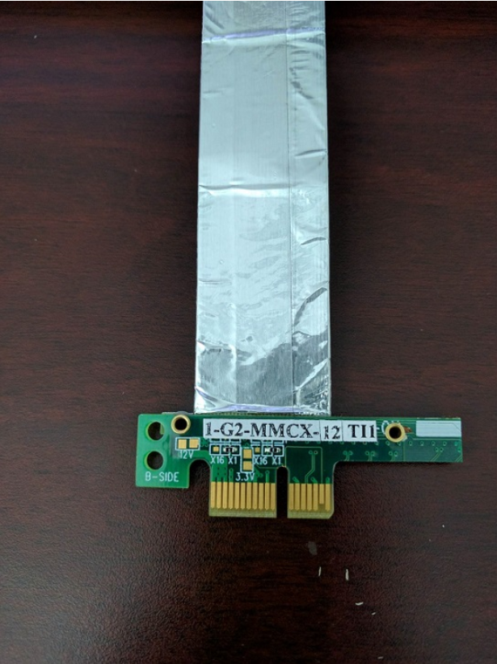
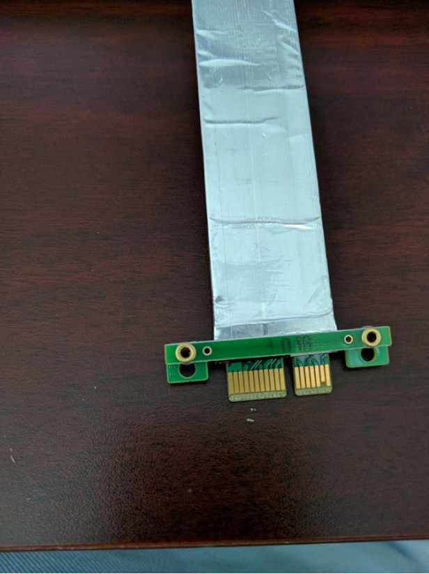

Introduction
The PCIe buffer transfer (RC) example demonstrates a buffer transfer between RC and EP device.
The RC device sends a buffer to the EP device, and the EP device loops back the same buffer to RC. RC device validates the buffer transfer by comparing the buffer received from EP with the original source buffer.
Supported Combinations
| Parameter | Value |
| CPU + OS | r5fss0-0_freertos |
| Toolchain | ti-arm-clang |
| Board | am64x-evm |
| Example folder | examples/drivers/pcie/pcie_buf_transfer/pcie_buf_transfer_rc |
Steps to Run the Example
Build the example
- When using CCS projects to build, import the CCS project for the required combination and build it using the CCS project menu (see Using SDK with CCS Projects).
- When using makefiles to build, note the required combination and build using make command (see Using SDK with Makefiles)
HW Setup
- Note
- Make sure you have setup the EVM with cable connections as shown here, EVM Setup. In addition do below steps.
AM64X-EVM
- For connecting two board in RC and EP mode a specialized cable as below is required
- This cable can be obtained from Adex Electronics (https://www.adexelec.com).
- Modify the cable to remove resistors in CK+ and CK- in order to avoid ground loops (power) and smoking clock drivers (clk+/-).
- The ends of the modified cable should look like below:
A side

PCIe cable A side end 1 |

PCIe cable A side end 2 |
B side

PCIe cable B side end 1 |

PCIe cable B side end 2 |
Run the example
- Launch a CCS debug session and run the example executable, see CCS Launch, Load and Run
- Run the PCIE buffer transfer EP example on the other connected board
- You will see logs in the UART terminal as shown in the next section.
See Also
PCIE
Sample output
Device in RC mode
Endpoint Device ID: 100X
Endpoint Vendor ID: 17CDX
All tests have passed!!

 1.8.20
1.8.20